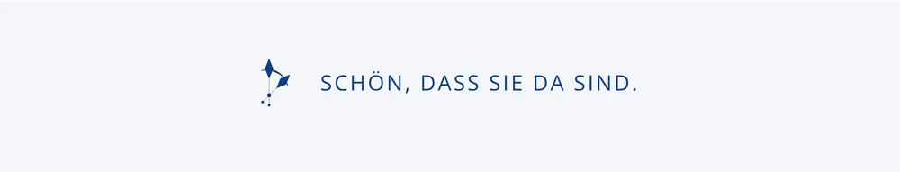
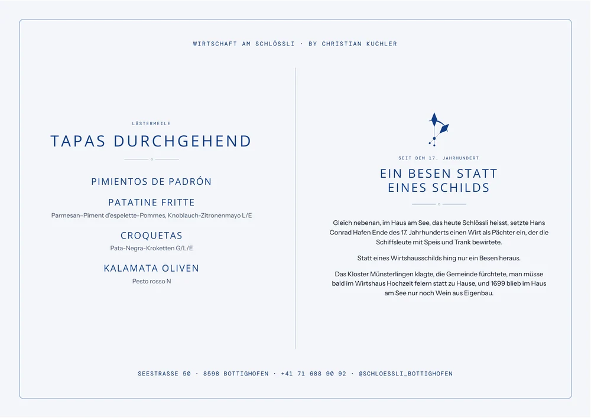
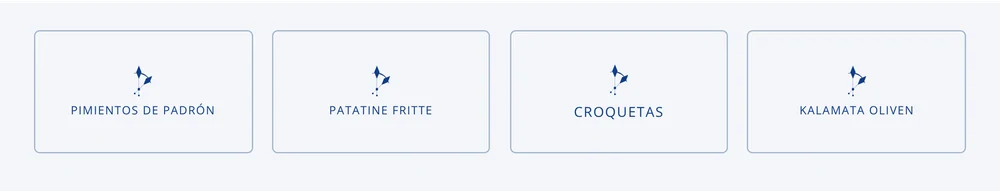
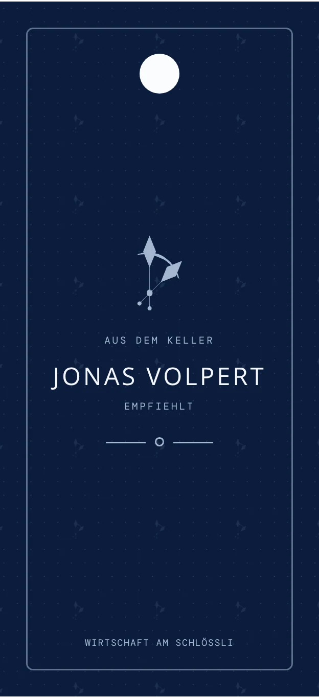
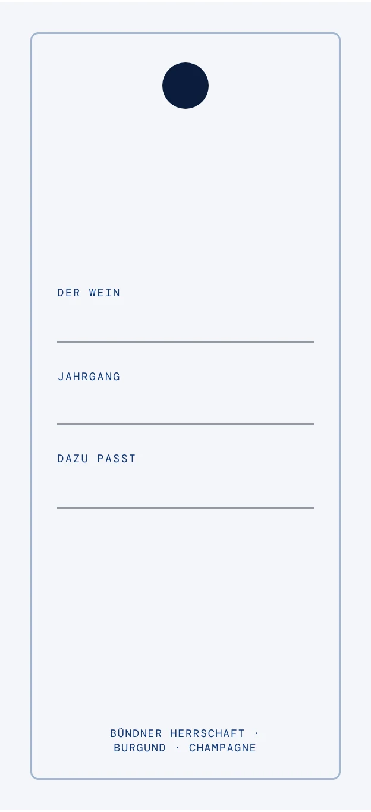
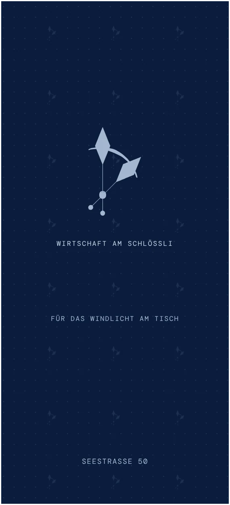

09Ideen für Papier
Fünf Beigabenfür den Tisch.
Kleine Dinge, die ein Gast am Platz findet oder mitnimmt. Alle im Stil der neuen Seite, jede als Druckvorlage. Was nicht passt, lassen Sie einfach weg.
01Serviettenband für die Feier
Ein Bandum die Serviette.
Bei Banketts liegt auf jedem Teller die Serviette gerollt, ein Band mit den Zeigern und der Wortmarke hält sie zusammen. Innen ein Satz zur Begrüssung.
Band 210 × 40 mm, um die gerollte Serviette

02Tischset der Lästermeile
Ein Tischsetfür die Bar.
Auf den Tischen der Lästermeile liegt ein Blatt aus Papier: links die Tapas, die es den ganzen Tag gibt, rechts die Geschichte vom Besen, der Ende des 17. Jahrhunderts statt eines Schilds heraushing.
A3 quer, 420 × 297 mm

03Fähnchen für die Tapas
Ein Fähnchenin jeder Schale.
Am Spiess in der Schale: welche der Tapas auf dem Tisch steht. Vier Fähnchen für die vier Tapas der Lästermeile, Namen wie auf der Karte.
Fähnchen 46 × 26 mm, gefalzt am Spiess

04Flaschenanhänger aus dem Keller
Ein Anhängerfür die Flasche.
Für die Flasche, die ein Gast mit nach Hause nimmt: vorne die Empfehlung von Jonas Volpert, hinten Wein, Jahrgang und was dazu passt, von Hand eingetragen.
55 × 120 mm, zwei Seiten, gelocht


05Streichholzbriefchen
Streichhölzerfür die Windlichter.
Für die Windlichter auf der Terrasse, zum Mitnehmen nach dem Abend unter der Platane. Aussen die Zeiger auf der Nacht über dem See.
Briefchen 50 × 110 mm (gefalzt 50 × 40)

Dazu gibt es Drucksachen, Untersetzer, Sticker und Postkarten im selben Stil.